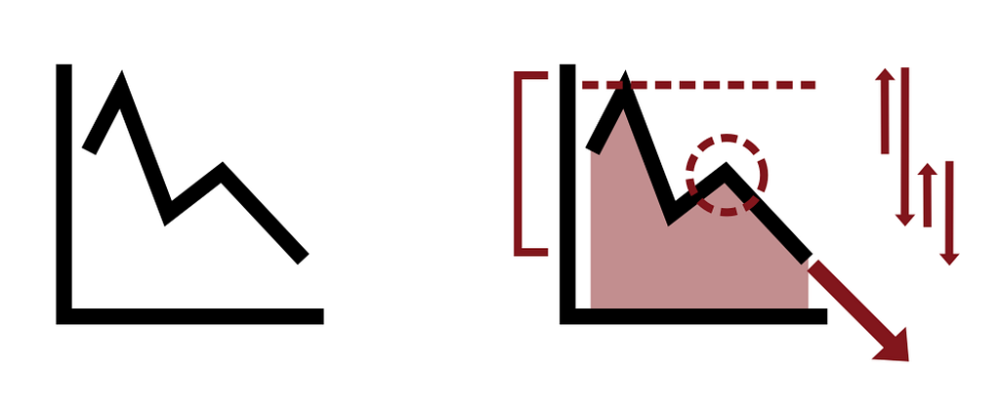
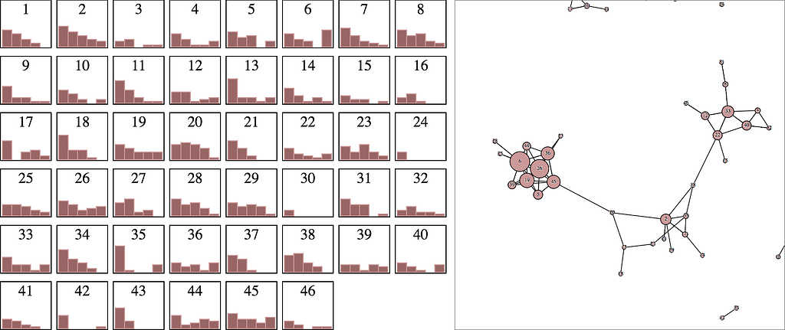
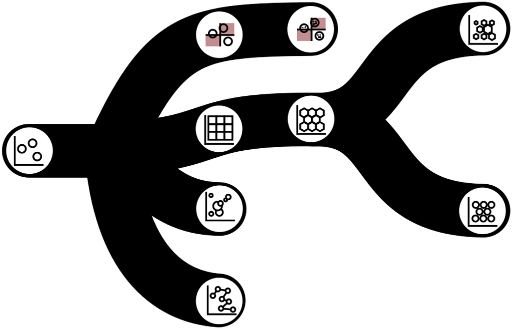
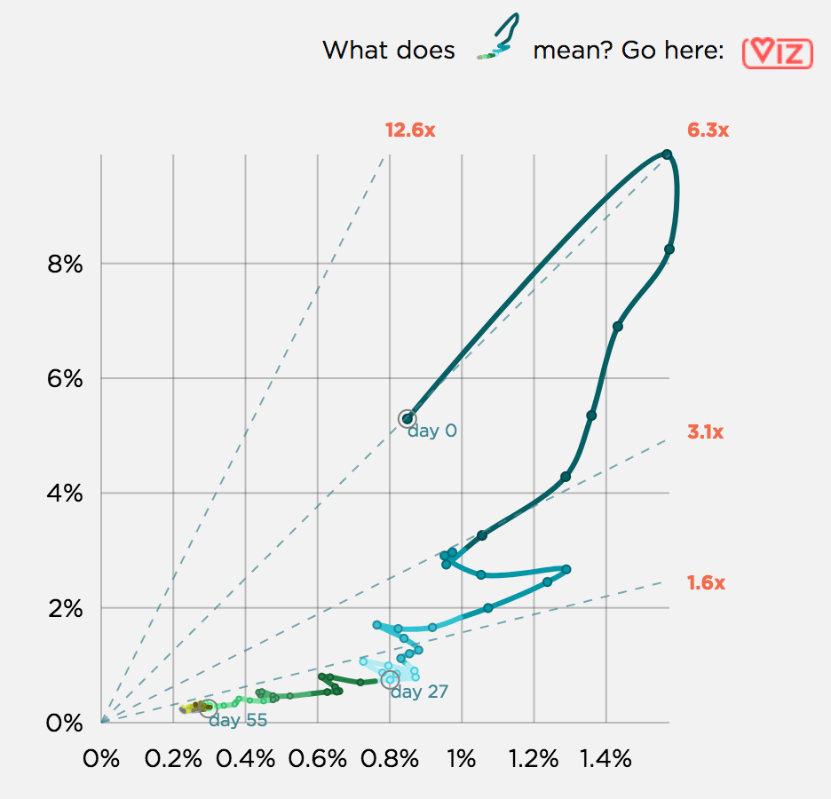

The most important thing about a chart is not its aesthetics, the technology used to create it, the kind of data visualization layout or even the data it represents. The most important thing about a chart is its impact. Impact is what a chart does. And yet, we hardly even have a vocabulary around data visualization impact. It’s not to say data visualization creators aren’t interested in impact but, like the last two pieces in this series, the concepts around what charts do need to be made more clear to be able to make charts more effective.
A good chart is typically declared such because of its popular appeal or its inclusion in a list of great charts. That perspective ignores that charts are active in the world and their impact is the key measure of their success. The simplest thing a chart can do is provide insights. Insights is plural because it’s better to think of an insight as a thing that can be counted and collected and shown. Making insights more concrete and collectible is one of the major themes of designing data visualization like it was a game.
Insight generation is probably the best understood effect of a chart but, sadly, we don’t even have a vocabulary of insights. We have to be able to think about the insights that a chart generates with the same level of sophistication that we have for the channels it uses to display data and the tools used to create the chart. If you can only describe insights in a loose way, it doesn’t have the same kind of salience to audiences as the components of a data visualization library or the gestalt features of a particular data visualization layout. One way to think about insights in this way is to think about annotations, which typically point to an individual feature that could be said to be a discrete “insight” of some sort.

Readers find trends and points of interest in our charts and we neglect them when we neglect to engage with insights. Instead of naming and fostering the collection of these insights we let them be ephemera upon the chart, to be gathered in other modes (like narrative text or in conversation) rather than optimizing the chart space for their discovery and manipulation. If your audience finds a line chart effective, did they do so because of the trends that it shows or the points of interest or the volatility? It may be in your next product you can better emphasize that type of insight with annotation or modification or an entirely different chart.
What else do charts do? They cause change. A chart reveals some trend or insight and that is acted upon in a place beyond the chart. Yet, we’ve done little to connect the activity beyond the chart back to the chart. It’s as if we want to spend all this time and effort creating a mechanism to understand and communicate but pretend we don’t need it once the action is taken.
This is even more difficult to measure than insight, but also more important. Understanding how a particular chart was an effective piece of evidence or motivation is key to developing more effective data visualization.
Importantly, charts cause visual literacy. More complex data visualization forms exist than bar charts and line charts. But these methods are often ignored out of concern that readers cannot understand them. In catch-22 fashion, the new form cannot be introduced until it is understood but can only be understood once it’s introduced. Complex data visualization is typically seen as either for specialists, such as the arcane data visualization forms prominent in genetics research, or as “data visualization for data visualization’s sake” promoted by bored chart makers who want to experiment with xenographics.

But all data visualization was, at some point, complex data visualization, until an audience grew comfortable and literate enough to read it. Charts create visual literacy and also foster, through improved literacy, new perspectives that emphasize the kinds of data being represented. Bar charts and line charts promote numeric data literacy and an emphasis on accuracy and precision. Network data visualization promotes topological data literacy and an emphasis on emergent structures and systems. Charts inspire and reify those perspectives.
Lastly, charts create new charts. Old-fashioned dials led to data visualization in the form of dials which eventually led to the election dial chart, complete with skeuomorphic jitter, which itself led to even more dial charts. The first scatterplot caused more scatterplots which mutated into graduated symbol plots and quadrants and perhaps hexbins and contour plots. Catalogs of data visualization have the tendency to treat every form as a category of one without drawing connections between them, which disguises how charts lead to other charts.

This might sound like the kind of thing that only a person who professionally creates data visualization cares about. But if a chart is a piece of communication that carries with it explicit messages, intentional meaning, causal impact and a host of other attributes, then that means that when a chart reproduces it creates another in a long line of complex, impactful things. Charts yield visual literacy which yields the possibility for new charts (because, among the other people who become more visually literate, are the chart makers themselves).
Some rules for improving what a chart does
Reveal Insights: Understand the kinds of insights that your readers are looking for. Be able to categorize those insights and describe, graphically, how they appear in the data visualization products you create. Focus on and describe the methods you’re using to help your readers identify, collect and deploy those insights. Evaluate the data visualization methods you’re using to determine how they improve and hold back the creation and collection of these insights.
Cause Change: Track and measure the impact of charts on business decisions via interviews and examples of how charts have been used in presentations and memos. Be aware of how charts are used and whether they are used in their original form in the applications where they’re deployed or whether they’re used as screenshots or with graphical modification (like color changes, cropping, or notes). Identify when charts have had negative effects due to confusion or misunderstanding. Make sure decision makers recognize the role of charts in their decisions.
Cause Visual Literacy: Keep track of how your choices of data visualization method are constrained by the visual literacy of your audience. Try to find areas where the insights your readers expect can be improved with a chart that they are not comfortable with and introduce it to them. Track what works and what doesn’t as far as methods of teaching readers how to understand new charts.

Create New Charts: Try to maintain a lineage of charts and views in your organization. Look at charts in use from external vendors to see if there are forms that are not commonly in use internally. External vendor tools often by virtue of being sales-focused tend to have more flamboyant and complex methods, which can be used to spur internal tools to adopt those methods. Keep an eye out for when particular stakeholders associate a certain chart with a certain perspective or dataset. Flame graphs, for instance, are often thought to only apply to processes on servers or rendering but the method they use, the partition layout, is generic and suitable for a wider range of applications.
How to do more with charts
How a chart is made, designed, and selected can rely on expert opinion and examples. But what a chart does seems to be based solely on the response; it’s garnered. That situation won’t and can’t change. All communication is evaluated based on content but persuasive communication, which is all data visualization unless it is purely decorative, is rightly also evaluated based on effect. If a language of impact and a perspective emphasizing the effect of charts can be developed, it gives a way to then evaluate the response and identify whether certain insights or other products were the reason for the appeal of the chart.
We will always need to make charts quickly and make charts that can be quickly read. But we must also better understand the chart as a work, as a text. Without doing that, the chart maker has no path to improvement, the reader has no context with which to build expectations, and the leader has no way to plan for strategic excellence.
If you haven’t yet, check out Part 1: WHAT CHARTS SAY and Part 2: WHAT CHARTS MEAN of this series on Data Visualization Fast and Slow.